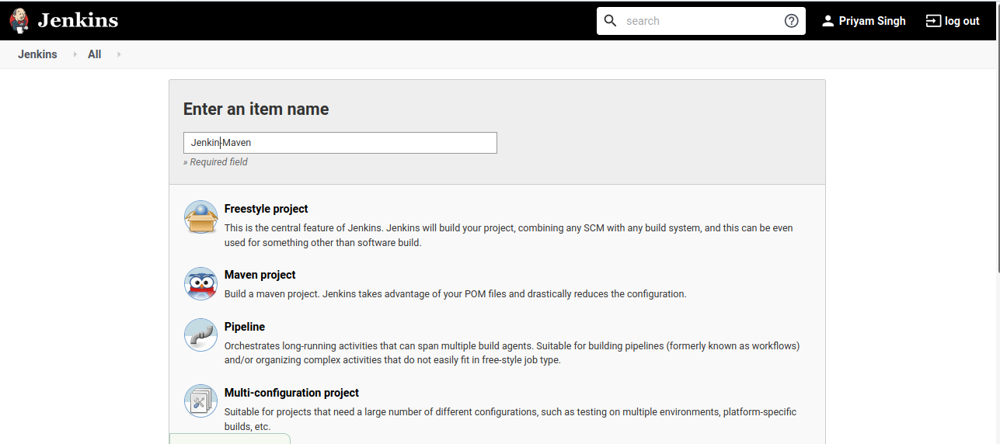

Setting up a pipeline:
Objective
This section aims to set up a basic pipeline in Jenkins to perform the task and solve the 4th point of the problem statement under Task 1.
Why Pipeline?
Jenkins is, fundamentally, an automation engine that supports several automation patterns. Pipeline adds a powerful set of automation tools onto Jenkins, supporting use cases that span from simple continuous integration to comprehensive CD pipelines. By modeling a series of related tasks, Pipeline has many features:
- Code: Pipelines are implemented in code and typically checked into source control, giving teams the ability to edit, review, and iterate upon their delivery pipeline.
- Durable: Pipelines can survive both planned and unplanned restarts of the Jenkins master.
- Pausable: Pipelines can optionally stop and wait for human input or approval before continuing the Pipeline run.
- Versatile: Pipelines support complex real-world CD requirements, including the ability to fork/join, loop, and perform work in parallel.
- Extensible: The Pipeline plugin supports custom extensions to its DSL(Domain Specific Language) and multiple options for integration with other plugins.
Jenkins pipeline Project
I set up Jenkins as mentioned in the Setup of Jenkins section. For building a pipeline for Maven project I followed these steps and also downloaded Maven in my Jenkins VM for all the repositories related to it are present in the system:
- Click on the
New Itemfrom the main dashboard which leads to a different page.

Filled the project name as Jenkins-Maven and choose Maven Project as the project type as it was a Maven based project.
-
Next come's the project configurations page. Here:
-
Under
Generalsection:- I gave a description of the application being deployed and the purpose of this pipeline.
- Under the
Source Code Managementoption I checked theGitoption and provided the GitHub URL for the project's repository. This option allow's Jenkins to know where to fetch the project from.
- Under
Build Triggerssection:- I checked the
Build whenever a SNAPSHOT dependency is builtoption to allow automated builds.
- I checked the
I clicked on save to save the configurations.
Jenkinsfile
Jenkinsfile is defined as a utility where the actions that are to be performed on the build can be written in a syntactical format in a file. I followed this article because it is the official documentation from Jenkins and it is easy to understand because it has a simple format with examples.
The following are the contents of the Jenkinsfile which executes the pipeline:
pipeline {
agent any
stages {
stage ('Compile Stage') {
steps {
withMaven(maven : 'maven_3_5_0') {
sh 'mvn clean compile'
}
}
}
stage ('Testing Stage') {
steps {
withMaven(maven : 'maven_3_5_0') {
sh 'mvn test'
}
}
}
stage ('Deployment Stage') {
steps {
withMaven(maven : 'maven_3_5_0') {
sh 'mvn deploy'
}
}
}
}
}
- The
pipelineblock constitutes the entire definition of the pipeline. - The
agentkeyword is used to choose the way the Jenkins instance(s) are used to run the pipeline. Theanykeyword defines that Jenkins should allocate any available agent (an instance of Jenkins/a slave/the master instance) to execute the pipeline. A more thorough explanation can be found here. - The
stagesblock houses all the stages that will comprise the various operations to be performed during the execution of the pipeline. - The
stageblock defines the task performed through the Pipeline (e.g. "Build", "Test" and "Deploy" stages) - The
stepsblock defines the actions that are to be performed within a particular stage. shkeyword is used to execute shell commands through Jenkins.- Lastly,
mvnover here stands for maven.
Deploying the files to Production VM
For deploying our files from the Jenkins VM to production VM, I did the SSH Access configuration. I set up an SSH access configuration for Jenkins to be able to perform operations and copy application files onto the Production VM to allow the Jenkins User to log on to the Production VM without entering for a password again and again.
SSH Access Configuration
I referred to this document because the way it is explained is simple to understand.
Step 1: Create the RSA Key Pair
The first step is to create the key pair on the jenkins-infra VM :
ssh-keygen -t rsa
Step 2: Store the Keys and Passphrase
Once I entered the above command, I got a few more questions:
Enter file in which to save the key (/home/.ssh/id_rsa):
I pressed enter here, saving the file to the mentioned path.
Enter passphrase (empty for no passphrase):
I pressed enter because if I have given a passphrase, is then having to type it in each time I use the key pair. After this, I got the public key and private key location.
Step 3: Copy the Public Key
The public key generated above was added to ~/.ssh/authorized_keys on the Production VM.
ssh-copy-id jenkins@198.51.100.0
Copying the folder
For copying the target folder of Jenkins-Maven Project from Jenkins VM to production VM, it didn't ask for the password this time:
scp -r /var/lib/jenkins/workspace/Jenkins-Maven/target production@192.168.1.4:/home/production/target
Syntax:
scp < source > < destination >
In this A is Jenkins VM and B is production VM. To copy a file from B to A while logged into B:
scp -r /path/to/file username@a:/path/to/destination
To copy a file from B to A while logged into A:
scp -r username@b:/path/to/file /path/to/destination